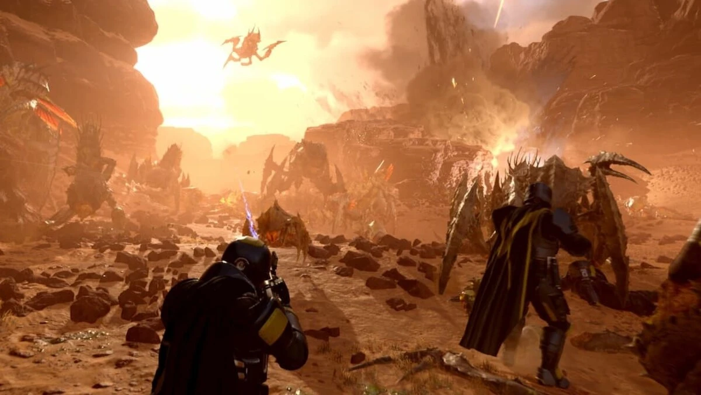
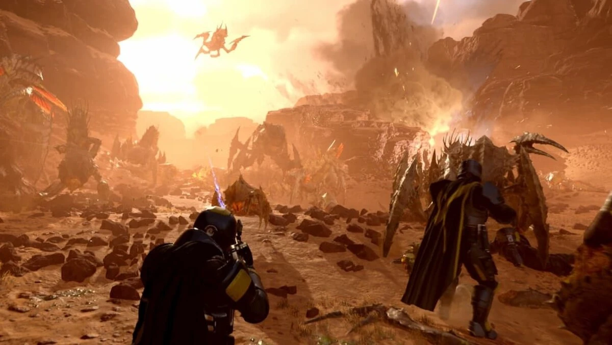

About the Game
Helldivers 2 is a 2024 cooperative third-person shooter game developed by Arrowhead Game Studios and published by Sony Interactive Entertainment. The game is the direct sequel to Helldivers, a 2015 top-down shooter. It was released for PlayStation 5 and Windows on 8 February 2024. Helldivers 2 received positive reviews from critics and became PlayStation's fastest selling title of all time, surpassing 12 million units within 12 weeks of its release, as well as Sony's most successful Windows title.